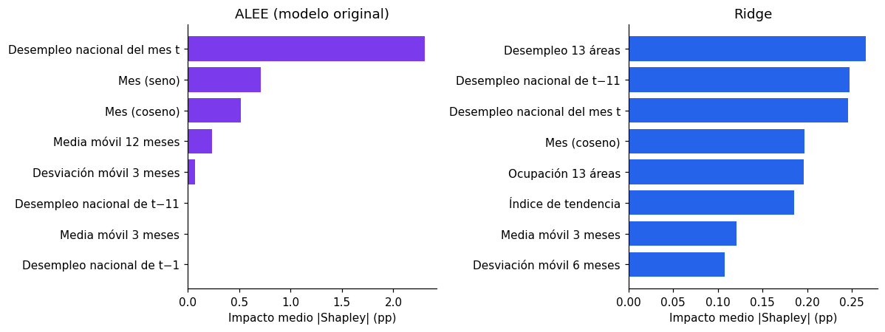

Modelo original: agregación local entrópica de expertos (ALEE)#
Versión del modelo
Este capítulo describe la versión de ALEE del paper, con tres expertos. La versión pre-registrada tenía cinco; los dos expertos ridge se quitaron en una iteración de diseño posterior a la validación confirmatoria. Las diez iteraciones evaluadas están registradas en docs/registro_desarrollo.md y experiments/protocolo.md.
Limitación que motiva el modelo#
Si se separan las 240 predicciones fuera de muestra del segundo entregable por terciles de la volatilidad reciente (la desviación de los últimos tres meses, que se conoce al pronosticar), el mejor modelo cambia de un tercil a otro:
modelos = ["XGBoost", "Ridge", "SVR", "KNN", "RandomForest", "Lasso", "DecisionTree"]
vol = ds.X["td_nacional_rollstd3"].values[oof["idx"]]
tercil = pd.qcut(vol, 3, labels=["Baja", "Media", "Alta"])
mse = pd.DataFrame({D.MODEL_LABELS[m]: (oof["y_true"] - oof[f"pred_{m}"]) ** 2 for m in modelos}).groupby(tercil, observed=True).mean().T
mse.columns.name = "Volatilidad reciente"
mse.round(3)
| Volatilidad reciente | Baja | Media | Alta |
|---|---|---|---|
| XGBoost | 1.804 | 1.116 | 4.453 |
| Ridge | 2.313 | 0.895 | 1.999 |
| SVR | 2.386 | 1.034 | 1.763 |
| KNN | 2.277 | 1.155 | 2.221 |
| Random Forest | 2.020 | 1.162 | 3.663 |
| Lasso | 3.108 | 1.926 | 3.552 |
| Árbol de decisión | 2.366 | 1.317 | 5.511 |
Mejor modelo por tercil: Baja: XGBoost; Media: Ridge; Alta: SVR
Error del mejor y del peor modelo por tercil: Baja: 1.80 y 3.11; Media: 0.89 y 1.93; Alta: 1.76 y 5.51
El modelo con menor error no es el mismo en los tres terciles. Una regla de combinación con pesos fijos (el promedio simple, los pesos por error global o el stacking lineal [Tim06]) no puede aprovechar ese cambio. Hipótesis: una combinación cuyos pesos dependan del estado del mercado laboral reduce el error frente a cualquier modelo único y frente a las combinaciones con pesos fijos.
Formulación#
Hay \(K = 3\) expertos programados con NumPy: persistencia (\(\hat y = y_t\)), regresión de Nadaraya-Watson del cambio, y cambio medio del mismo mes del año (el experto estacional). Hasta la iteración 3 había dos expertos más —ridge del nivel y ridge del cambio \(y_{t+1} - y_t\)— que se quitaron en la iteración 4 (exploratoria, posterior a la validación confirmatoria): evaluados en solitario se equivocaban más del doble que el experto estacional y diluían su peso en la combinación sin aportar precisión (docs/registro_desarrollo.md). Sea \(e_s \in \mathbb{R}^K\) el vector de errores fuera de muestra de los expertos en el mes \(s\): cada experto se entrena solo con los meses anteriores a \(s\). Para pronosticar en un punto \(x\) con estado \(z(x)\) (la volatilidad reciente y la brecha entre el último dato y la media de 12 meses, estandarizadas), los meses pasados reciben pesos
Como los pesos de la combinación \(w\) suman uno, \(y_s - w^\top f_s = w^\top e_s\), y el error cuadrático local de la combinación es \(w^\top Q(x) w\) con \(Q(x) = \sum_s a_s(x)\, e_s e_s^\top\). Los pesos resuelven
donde \(\Delta_K\) es el símplex y \(\pi\) son los pesos globales: la misma combinación con todos los meses y solo el decaimiento temporal. \(n_{\mathrm{eff}} = 1/\sum_s a_s^2\) es el tamaño efectivo de la muestra local [Kis65] y \(n_{\mathrm{ref}}\) el de los pesos globales. Cuando hay pocos meses parecidos al actual, como en el choque de 2020, la regularización crece y la combinación se queda cerca de \(\pi\). El factor \(\operatorname{tr}Q/K\), el error local medio de los expertos, hace que \(\lambda\) no dependa de las unidades. El pronóstico es \(\hat y(x) = \sum_k w^*_k(x)\, f_k(x)\).
El problema se resuelve con descenso de espejo proximal (gradiente exponenciado [KW97]) con paso \(\eta = 1/L\) y \(L = 2\max_{ij}\lvert Q_{ij}\rvert\):
Pseudocódigo#
Entrada: X (n × p, en orden cronológico), y, hiperparámetros h, T½, λ
Salida: pronóstico ŷ(x) y pesos w*(x)
Entrenamiento
1. para s = m0, …, n−1:
ajustar los K expertos con las filas 0..s−1
e_s ← y_s − f^(s)(x_s)
2. z_s ← estado estandarizado de cada fila registrada
3. π ← argmin_{w ∈ Δ} wᵀ Q_glob w + 0.01 · tr(Q_glob)/K · KL(w ‖ u) (u: uniforme)
4. ajustar los K expertos finales con todas las filas
Predicción en x
5. a ← pesos de la ecuación (1); n_eff ← 1 / Σ a_s²
6. Q ← Σ a_s e_s e_sᵀ; λ̃ ← λ · (n_ref / n_eff) · tr(Q)/K; η ← 1 / (2 max|Q_ij|)
7. w ← π
repetir hasta ‖w_nuevo − w‖₁ < 10⁻¹⁰ o 500 iteraciones: w ← actualización (3)
8. devolver ŷ = Σ_k w_k f_k(x)
Sustento teórico#
P1 (existencia y unicidad). \(\Delta_K\) es compacto y \(F\) es continua, así que existe un mínimo. \(w^\top Q w\) es convexa porque \(Q \succeq 0\), y \(\mathrm{KL}(\cdot\Vert\pi)\) es estrictamente convexa en \(\Delta_K\). Con \(\tilde\lambda > 0\), \(F\) es estrictamente convexa y el minimizador es único. Como el gradiente de la divergencia tiende a menos infinito en la frontera, el óptimo está en el interior y cumple \(\nabla F(w^*) = c\,\mathbf{1}\).
P2 (descenso monótono). Para \(d = w' - w\) se cumple \(d^\top (2Q) d \le 2\max_{ij}\lvert Q_{ij}\rvert\, \lVert d\rVert_1^2 = L\lVert d\rVert_1^2\). Por la desigualdad de Pinsker, \(\tfrac12\lVert d\rVert_1^2 \le \mathrm{KL}(w'\Vert w)\), de donde \(g(w') \le g(w) + \nabla g(w)^\top (w'-w) + L\,\mathrm{KL}(w'\Vert w)\) con \(g(w) = w^\top Q w\): \(g\) es \(L\)-suave relativa a la entropía [BBT17, LFN18]. La actualización (3) es el minimizador de \(\nabla g(w_t)^\top v + \tilde\lambda\,\mathrm{KL}(v\Vert\pi) + L\,\mathrm{KL}(v\Vert w_t)\) en \(\Delta_K\); evaluando ese problema en \(v = w_t\) se obtiene \(F(w_{t+1}) \le F(w_t)\). Además, \(F(w_T) - F(w^*) \le L\,\mathrm{KL}(w^*\Vert w_0)/T\) [LFN18]. Como \(\tilde\lambda\) es constante para cada \(x\), la regularización adaptativa no altera la prueba.
P3 (cota por los expertos). \(\hat y\) es una combinación convexa de los \(f_k\), así que \(\lvert y - \hat y\rvert \le \max_k \lvert y - f_k\rvert\) y, por la desigualdad de Jensen, \((y-\hat y)^2 \le \sum_k w_k (y - f_k)^2\).
P4 (casos límite). Si \(\lambda \to \infty\), \(w^* \to \pi\), que es la combinación global. Sin localización, los pesos no dependen de \(x\). Con \(\pi\) uniforme y \(\lambda \to \infty\) se obtiene el promedio simple. Las reglas estándar son casos particulares, lo que define la ablación.
Supuestos y plausibilidad. Las filas están en orden cronológico y cada una solo usa información anterior al mes que pronostica, lo que se verificó en Auditoría de fuga de información y declaración de los datos. Las garantías P1 a P3 no dependen de la distribución de los datos. La que sí depende de ella es que los errores pasados en estados parecidos anticipen los errores futuros, y en un choque sin precedentes como el de 2020 ese supuesto falla.
Implementación#
La clase ModeloOriginal hereda de BaseEstimator y RegressorMixin, de modo que funciona con clone, cross_val_score y la validación anidada del segundo entregable.
Código del solucionador y de la clase (src/original_model.py)
def solve_weights(Q, lam, w0=None, max_iter=500, tol=1e-10, return_history=False, prior=None):
"""Pesos de la combinación: minimiza ``wᵀQw + λ̃ KL(w||π)`` en el símplex.
Descenso de espejo proximal con paso ``1/L``, ``L = 2 max|Q_ij|``.
Parameters
----------
Q : ndarray (K, K)
Matriz local (simétrica, semidefinida positiva) de errores.
lam : float
Regularización ``λ`` (sin escalar); se usa ``λ̃ = λ tr(Q) / K``.
w0 : ndarray, optional
Punto de partida (por defecto, el previo ``π``).
max_iter : int
Máximo de iteraciones.
tol : float
Se detiene cuando ``||w_{t+1} - w_t||_1 < tol``.
return_history : bool
Si se devuelve el valor del objetivo en cada iteración.
prior : ndarray, optional
Previo ``π`` del término de Kullback-Leibler, en el interior del
símplex (por defecto, el uniforme ``u``).
Returns
-------
ndarray or (ndarray, list)
Pesos óptimos (y la historia del objetivo).
"""
K = Q.shape[0]
u = np.full(K, 1.0 / K) if prior is None else np.asarray(prior, dtype=float)
lam_t = lam * np.trace(Q) / K
L = 2.0 * np.abs(Q).max()
w = u.copy() if w0 is None else np.asarray(w0, dtype=float)
def objective(v):
kl = np.sum(v * (np.log(np.maximum(v, 1e-300)) - np.log(u)))
return float(v @ Q @ v + lam_t * kl)
history = [objective(w)]
if L <= 0: # todos los expertos sin error local: cualquier w es óptimo, se deja el uniforme
return (w, history) if return_history else w
eta = 1.0 / L
a = 1.0 / (1.0 + eta * lam_t)
for _ in range(max_iter):
grad = 2.0 * Q @ w
logits = a * (np.log(np.maximum(w, 1e-300)) - eta * grad) + (1 - a) * np.log(u)
logits -= logits.max()
w_new = np.exp(logits)
w_new /= w_new.sum()
done = np.abs(w_new - w).sum() < tol
w = w_new
if return_history:
history.append(objective(w))
if done:
break
return (w, history) if return_history else w
class ModeloOriginal(BaseEstimator, RegressorMixin):
"""Agregación local entrópica de expertos (ALEE) para pronóstico a un paso.
Parameters
----------
bandwidth : float
Ancho ``h`` del núcleo gaussiano sobre el estado estandarizado.
half_life : float
Vida media (en meses) del decaimiento temporal: ``γ = 0.5 ** (1 / half_life)``.
``np.inf`` desactiva el decaimiento.
lam : float
Fuerza de la regularización entrópica hacia el previo ``π``.
shrink_to : {"global", "uniforme"}
Previo ``π`` de la regularización: los pesos globales (la combinación
restringida al símplex con todos los meses, solo con decaimiento
temporal) o el promedio simple. Con ``"global"``, la localización solo
se aparta de la mejor combinación global cuando la evidencia local lo
justifica.
min_train : int
Meses mínimos para empezar a registrar errores fuera de muestra de los expertos.
feature_names : tuple of str
Nombres de las columnas de ``X``, en orden.
lag_col, month_cols, state_cols : str, tuple
Columnas con papel especial: último valor observado, mes codificado y
variables de estado. El estado incluye además la brecha
``y_t - media móvil de 12 meses`` (``gap_cols``).
gap_cols : tuple of str or None
``(último valor, media móvil)`` para la brecha; ``None`` para omitirla.
localize : bool
Si es ``False``, todos los meses pasados pesan igual (ablación).
adaptive_lam : bool
Si la regularización crece cuando la muestra local efectiva es pequeña
(ver ``effective_lam``). ``False`` reproduce la iteración 2.
max_iter : int
Iteraciones máximas del descenso de espejo.
random_state : int
Sin efecto (el algoritmo es determinista); se conserva por compatibilidad.
"""
def __init__(
self,
bandwidth=1.0,
half_life=60.0,
lam=0.1,
shrink_to="global",
min_train=36,
feature_names=DEFAULT_FEATURES,
lag_col="td_nacional_lag1",
month_cols=("mes_sin", "mes_cos"),
state_cols=("td_nacional_rollstd3",),
gap_cols=("td_nacional_lag1", "td_nacional_rollmean12"),
localize=True,
adaptive_lam=True,
max_iter=500,
random_state=42,
):
self.bandwidth = bandwidth
self.half_life = half_life
self.lam = lam
self.shrink_to = shrink_to
self.min_train = min_train
self.feature_names = feature_names
self.lag_col = lag_col
self.month_cols = month_cols
self.state_cols = state_cols
self.gap_cols = gap_cols
self.localize = localize
self.adaptive_lam = adaptive_lam
self.max_iter = max_iter
self.random_state = random_state
# -------------------------------------------------------------- utilidades
def _validate_params(self):
if not (self.bandwidth > 0):
raise ValueError("bandwidth debe ser positivo")
if not (self.half_life > 0):
raise ValueError("half_life debe ser positivo (np.inf para no decaer)")
if not (self.lam >= 0):
raise ValueError("lam debe ser no negativo")
if int(self.min_train) < 2:
raise ValueError("min_train debe ser al menos 2")
if self.shrink_to not in ("global", "uniforme"):
raise ValueError('shrink_to debe ser "global" o "uniforme"')
def _col(self, name):
try:
return list(self.feature_names).index(name)
except ValueError:
raise ValueError(f"La columna {name!r} no está en feature_names") from None
def _state(self, X):
parts = [X[:, self._col(c)] for c in self.state_cols]
if self.gap_cols is not None:
parts.append(X[:, self._col(self.gap_cols[0])] - X[:, self._col(self.gap_cols[1])])
return np.column_stack(parts)
# ----------------------------------------------------------- aprendizaje
def fit(self, X, y):
"""Registra los errores fuera de muestra de los expertos y ajusta los expertos finales.
Para cada mes ``s`` desde ``m0`` hasta ``n - 1`` los expertos se ajustan
con los meses ``0..s-1`` y pronostican el mes ``s`` (ventana expansiva).
Parameters
----------
X : array-like (n, p)
Variables en orden cronológico, con las columnas de ``feature_names``.
y : array-like (n,)
Objetivo.
Returns
-------
self
"""
self._validate_params()
X, y = check_X_y(X, y, dtype=float, y_numeric=True)
if X.shape[1] != len(self.feature_names):
raise ValueError(f"X tiene {X.shape[1]} columnas y feature_names {len(self.feature_names)}")
n = len(y)
self.cols_ = {"lag1": self._col(self.lag_col), "mes_sin": self._col(self.month_cols[0]),
"mes_cos": self._col(self.month_cols[1])}
# Arranque: suficientes meses para los expertos y para tener errores que localizar.
m0 = int(min(self.min_train, max(2, n // 2)))
errors, rows = [], []
for s in range(m0, n):
experts = _Experts(X[:s], y[:s], self.cols_)
errors.append(y[s] - experts.predict(X[s:s + 1])[0])
rows.append(s)
self.errors_ = np.asarray(errors) # (n - m0, K)
self.oof_rows_ = np.asarray(rows)
state = self._state(X)
self.state_mu_, self.state_sd_ = _standardize_fit(state)
self.state_ = (state[self.oof_rows_] - self.state_mu_) / self.state_sd_
gamma = 0.0 if np.isinf(self.half_life) else np.log(0.5) / self.half_life
self.log_decay_ = gamma * (n - 1 - self.oof_rows_) # log γ^(n-1-s)
self.experts_ = _Experts(X, y, self.cols_)
self.n_features_in_ = X.shape[1]
self.expert_names_ = EXPERTS
self.prior_ = self._global_prior()
return self
def _global_prior(self):
"""Previo ``π`` de la regularización.
Con ``shrink_to="global"`` es la combinación restringida al símplex que
minimiza el error cuadrático de todos los meses registrados (solo con
el decaimiento temporal), con una regularización mínima hacia el
uniforme (``PRIOR_LAM``) para que quede en el interior del símplex,
donde el término de Kullback-Leibler está definido.
"""
K = self.errors_.shape[1]
a = np.exp(self.log_decay_ - self.log_decay_.max())
a /= a.sum()
self.n_eff_ref_ = 1.0 / np.sum(a ** 2)
if self.shrink_to == "uniforme":
return np.full(K, 1.0 / K)
Q = (self.errors_ * a[:, None]).T @ self.errors_
prior = solve_weights(Q, PRIOR_LAM, max_iter=5000)
prior = np.maximum(prior, PRIOR_FLOOR)
return prior / prior.sum()
def local_weights(self, X):
"""Pesos ``a_s(x)`` de los meses pasados para cada fila de ``X`` (n_x, n_oof)."""
check_is_fitted(self, "errors_")
X = check_array(X, dtype=float)
if not self.localize:
logk = np.zeros((len(X), len(self.oof_rows_)))
else:
z = (self._state(X) - self.state_mu_) / self.state_sd_
d2 = ((z[:, None, :] - self.state_[None, :, :]) ** 2).sum(-1)
logk = -d2 / (2.0 * self.bandwidth ** 2)
logk = logk + self.log_decay_[None, :]
logk -= logk.max(axis=1, keepdims=True)
a = np.exp(logk)
return a / a.sum(axis=1, keepdims=True)
def combination_weights(self, X):
"""Pesos ``w*(x)`` de los cinco expertos para cada fila de ``X`` (n_x, K)."""
A = self.local_weights(X)
E = self.errors_
W = np.empty((len(A), E.shape[1]))
for i, a in enumerate(A):
Q = (E * a[:, None]).T @ E
W[i] = solve_weights(Q, self.effective_lam(a), w0=self.prior_, max_iter=self.max_iter, prior=self.prior_)
return W
def effective_lam(self, a):
"""Regularización para unos pesos locales ``a``.
Con ``adaptive_lam=True`` se multiplica ``λ`` por ``n_ref / n_eff(a)``,
donde ``n_eff(a) = 1 / Σ a_s²`` es el tamaño efectivo de la muestra
local (de Kish) y ``n_ref`` el de los pesos solo con decaimiento. La
varianza de ``Q`` como estimador del error local crece como
``1 / n_eff``: cuando hay pocos meses parecidos (como en el choque de
2020) la combinación se queda más cerca de los pesos globales.
"""
if not self.adaptive_lam:
return self.lam
n_eff = 1.0 / np.sum(np.asarray(a) ** 2)
return self.lam * self.n_eff_ref_ / n_eff
def expert_predictions(self, X):
"""Pronóstico de cada experto final (n_x, K)."""
check_is_fitted(self, "experts_")
return self.experts_.predict(check_array(X, dtype=float))
def predict(self, X):
"""Pronóstico combinado ``Σ_k w*_k(x) f_k(x)``."""
check_is_fitted(self, "errors_")
X = check_array(X, dtype=float)
if X.shape[1] != self.n_features_in_:
raise ValueError(f"X tiene {X.shape[1]} columnas; el modelo se ajustó con {self.n_features_in_}")
return (self.combination_weights(X) * self.expert_predictions(X)).sum(axis=1)
Pruebas unitarias#
tests/test_original_model.py cubre los cinco puntos que exige la guía: aprendizaje con solución conocida, reproducibilidad, entradas inválidas, compatibilidad con clone y verificación numérica de P1 a P4. Se ejecutan al construir el libro:
r = subprocess.run([sys.executable, "-m", "pytest", "-q", "tests/test_original_model.py"], capture_output=True, text=True)
print(r.stdout.strip().splitlines()[-1])
65 passed in 14.64s
Complejidad#
El entrenamiento cuesta \(O(n^3 p)\) en tiempo y \(O(n^2)\) en memoria: en cada uno de los \(n\) meses del historial, el experto de núcleo recalcula las distancias entre todos los meses anteriores para fijar su ancho de banda con la heurística de la mediana. Predecir en un punto cuesta \(O(nK^2 + I K^2)\), con \(I\) iteraciones del descenso de espejo. Con los tamaños del problema (hasta 288 meses) las operaciones vectorizadas de NumPy hacen que el exponente medido quede por debajo de 3:
filas = []
for n in [72, 144, 216, 288]:
t0 = time.perf_counter(); m = ModeloOriginal().fit(ds.X.values[:n], ds.y_reg.values[:n]); fit = time.perf_counter() - t0
t0 = time.perf_counter(); m.predict(ds.X.values[-48:]); pred = time.perf_counter() - t0
filas.append({"n": n, "Entrenamiento (s)": fit, "Predicción de 48 meses (s)": pred})
tiempos = pd.DataFrame(filas).set_index("n")
pendiente = np.polyfit(np.log(tiempos.index), np.log(tiempos["Entrenamiento (s)"]), 1)[0]
print(f"Exponente empírico del entrenamiento: {pendiente:.2f}")
tiempos.round(3)
Exponente empírico del entrenamiento: 2.06
| Entrenamiento (s) | Predicción de 48 meses (s) | |
|---|---|---|
| n | ||
| 72 | 0.064 | 0.203 |
| 144 | 0.154 | 0.165 |
| 216 | 0.459 | 0.176 |
| 288 | 1.177 | 0.185 |
Iteraciones de diseño y ablación#
Antes de la versión actual se evaluaron diez iteraciones de diseño sobre los 240 meses de Colombia, todas con validación anidada y registradas con fecha en docs/registro_desarrollo.md. Las tres primeras ajustaron el previo y la regularización de la versión de cinco expertos. La cuarta, posterior a la validación confirmatoria, quitó los dos expertos ridge: evaluados solos se equivocaban más del doble que el experto estacional y diluían su peso en la combinación. Las seis siguientes probaron otros expertos, otras variables de estado y otras reglas de combinación, y ninguna se adoptó. Como tantas iteraciones sobre los mismos meses pueden volver optimista el resultado en Colombia, la evidencia principal está en los ocho conjuntos adicionales, evaluados una sola vez con el modelo congelado (capítulo 7).
Para ver de dónde viene el desempeño, cada uno de los tres expertos se evaluó solo en los mismos pliegues externos, con los hiperparámetros elegidos para la versión actual:
hp = pd.read_csv("artifacts/confirmatorio/iter4/rmse_K3_sin_ridge.csv")
res = {k: [] for k in list(EXPERTS) + ["promedio simple", "ALEE"]}
for f, (tr, te) in enumerate(TimeSeriesSplit(config.N_SPLITS_OUTER, gap=config.CV_GAP).split(ds.X)):
params = hp.iloc[f][["bandwidth", "half_life", "lam"]].to_dict()
m = ModeloOriginal(**params).fit(ds.X.values[tr], ds.y_reg.values[tr])
F = m.expert_predictions(ds.X.values[te])
for k, nombre in enumerate(EXPERTS):
res[nombre].append(np.sqrt(np.mean((ds.y_reg.values[te] - F[:, k]) ** 2)))
res["promedio simple"].append(np.sqrt(np.mean((ds.y_reg.values[te] - F.mean(axis=1)) ** 2)))
res["ALEE"].append(np.sqrt(np.mean((ds.y_reg.values[te] - m.predict(ds.X.values[te])) ** 2)))
ablacion = pd.DataFrame({k: [np.mean(v), np.std(v, ddof=1)] for k, v in res.items()}, index=["RMSE medio", "Desviación"]).T
ablacion.sort_values("RMSE medio").round(3)
| RMSE medio | Desviación | |
|---|---|---|
| estacional | 0.780 | 0.334 |
| ALEE | 0.817 | 0.328 |
| promedio simple | 1.035 | 0.287 |
| nucleo_cambio | 1.252 | 0.255 |
| persistencia | 1.273 | 0.257 |
El experto estacional es el componente más fuerte, y el promedio simple de los tres queda muy por detrás de la combinación. El capítulo 7 repite la ablación completa (sin localización, sin regularización adaptativa, previo uniforme, promedio simple y cada experto solo) en los nueve conjuntos, con pruebas de significancia.
Interpretabilidad#
Valores de Shapley [vStrumbeljK14] de los pronósticos de ALEE y de la mejor combinación de regresión del segundo entregable (Ridge), precalculados en data/dashboard/shap/:
fig, axes = plt.subplots(1, 2, figsize=(11, 4.2), sharex=False)
for ax, nombre, color in [(axes[0], "reg_ALEE", "#7c3aed"), (axes[1], "reg_Ridge", "#2563eb")]:
sg = D.shap_global(nombre)
imp = pd.Series(np.abs(sg["phi"]).mean(axis=0), index=[D.FEATURE_INFO[c][0] for c in sg["columns"]]).sort_values().tail(8)
ax.barh(imp.index, imp.values, color=color)
ax.set_title(D.MODEL_LABELS[nombre.split("_", 1)[1]])
ax.set_xlabel("Impacto medio |Shapley| (pp)")
fig.tight_layout()
plt.show()

ALEE (modelo original): Desempleo nacional del mes t 60%; Mes (seno) 19%; Mes (coseno) 14%
Ridge: Desempleo 13 áreas 12%; Desempleo nacional de t−11 11%; Desempleo nacional del mes t 11%
Los dos modelos usan la información de forma muy distinta. ALEE concentra la atribución en el último dato conocido y en el mes del año (seno y coseno), que son la huella de sus expertos de persistencia y estacional. Ridge la reparte entre muchas variables.